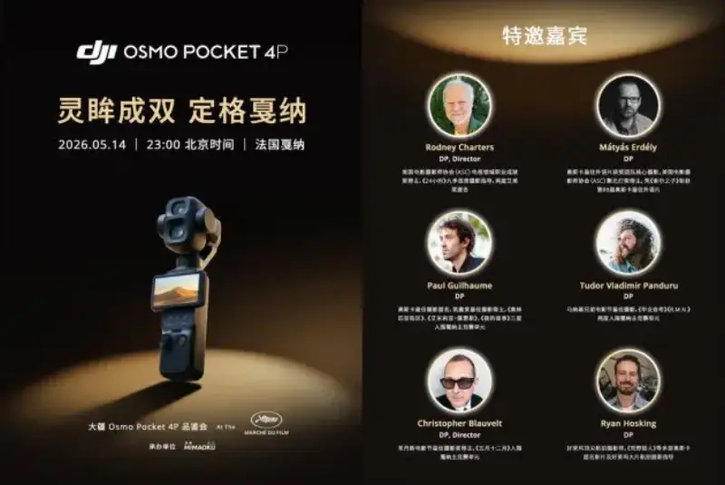
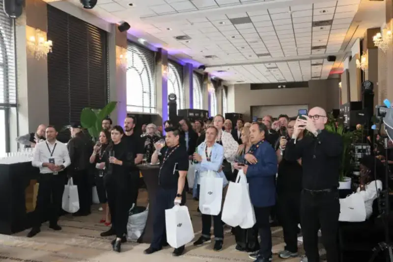
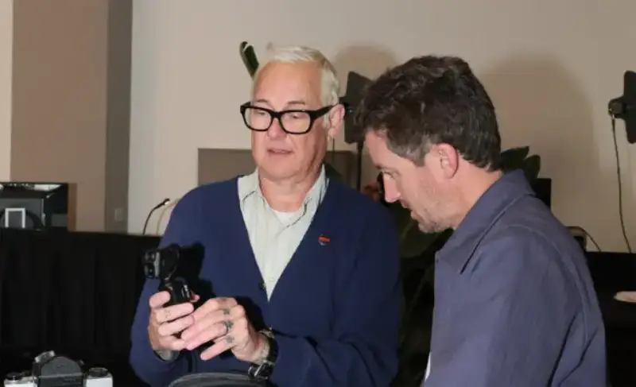
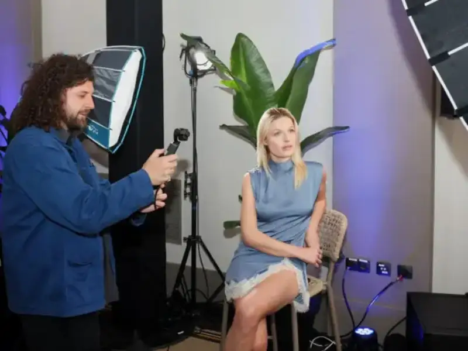
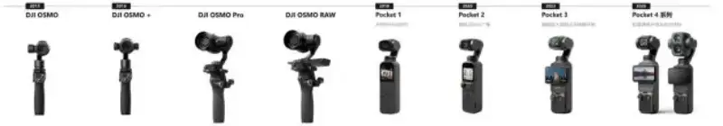
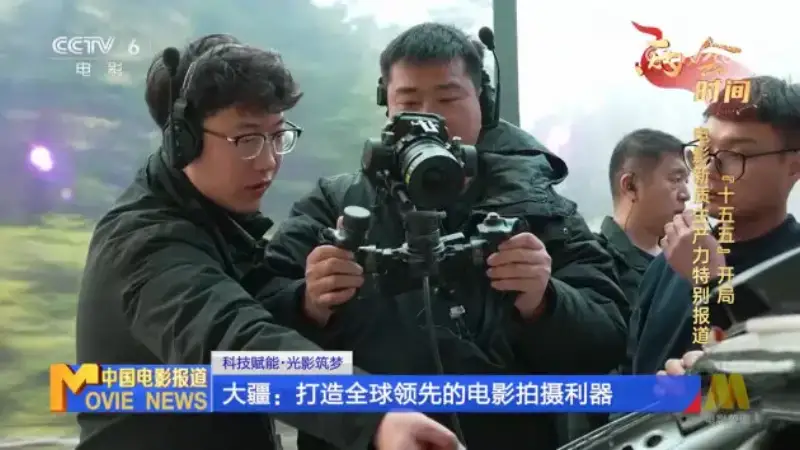

As a key global venue for film creation and exchange, Cannes in France draws image creators and industry attention from around the world. On May 14 local time, DJI held a dedicated Osmo Pocket 4P preview event in Cannes. It showed film-industry guests, professional creators, and international media its new dual-main-camera pocket gimbal camera. It also shared new breakthroughs in image quality, color science, gimbal stabilization, and shooting experience. Osmo Pocket 4P puts cinema-grade core imaging into a pocket-sized body. It has won high praise from well-known international film directors, cinematographers, and industry media.

At the Cannes site, Pocket 4P talked images with filmmakers worldwide
Professional image creation is going through a deep shift. The rising need for high mobility, high efficiency, and a high finished quality at the same time is reshaping how creators judge gear. They want a freer way to shoot, a higher dynamic range, a more mature color system, and imaging that fits a professional workflow. Against this backdrop, DJI brought Osmo Pocket 4P to Cannes to start a dialogue with image professionals worldwide about the future of creation.
The preview event brought guests from many fields, including top directors and cinematographers, mainstream international media, and specialist film media. Rodney Charters, winner of the ASC Television Career Achievement Award, chief director of photography for nine seasons of 24, and a two-time Emmy-nominated director and DP, attended. So did Matyas Erdely, cinematographer of the Oscar-winning Son of Saul, and Tudor Vladimir Panduru, cinematographer of the Cannes best-director winner Graduation. International outlets also attended, including Reuters, Forbes, Digital Camera World, GQ, and ELLE. They all saw the professional imaging power of Osmo Pocket 4P.

The event covered the history of the Osmo Pocket line and a deep look at the core of Osmo Pocket 4P. It included a product intro, hands-on trial, and talks. It showed how Pocket 4P brings cinema-grade imaging into a pocket-sized body. DJI ecosystem products also appeared, including the DJI Power power-storage line released in April. As a power solution for Osmo Pocket 4P, it shows how a fuller product ecosystem gives creators more flexible and reliable support.

17 stops of dynamic range and D-Log 2 color curve: putting cinema power in a pocket body
The wide-angle main camera of Osmo Pocket 4P uses a new one-inch CMOS. Its dynamic range jumps to 17 stops, on par with professional cinema cameras. This gives more room to keep detail in highlights and shadows under hard light, raise the tolerance of the frame, and leave room for color grading in post.
At the same time, Osmo Pocket 4P adds the new D-Log 2 professional color curve. This is the first time a DJI imaging product uses a new-generation professional Log profile. Compared with normal color modes and similar curves, D-Log 2 greatly improves smooth highlight rolloff, richer tone layers, and overall dynamic range.
In post, whether you unify the look of multiple cameras or do complex cinematic grading, creators gain more room to work. With 17 stops of dynamic range and the D-Log 2 color curve, Osmo Pocket 4P brings a professional imaging workflow into a pocket device. This is a true leap across eras. For professional creators, it has become a cinema-grade tool that truly fits a professional storytelling workflow.

Over ten years of imaging buildup give Pocket 4P its professional base
That Osmo Pocket 4P drew attention from professionals at Cannes rests on DJI's long technical buildup and systematic work in professional imaging.
In 2015, DJI released the Osmo. It brought stabilized flight-proven drone tech to handheld ground imaging for the first time and created a new category, the handheld gimbal camera. In 2018, Osmo Pocket put a 3-axis mechanical gimbal and 4K/60fps recording into a pocket body, starting the era of the pocket gimbal camera. In 2020, Pocket 2 added a 20mm wide lens, broke the view limits of the first model, and used a modular design to add a wireless mic system to the shooting ecosystem. Pocket grew from a single device into an all-in-one creation system. In 2023, Pocket 3 made a leap: a one-inch CMOS raised image quality, a 2-inch rotating touchscreen switched smoothly between portrait and landscape, and refined color science and optics gave natural portraits. The Pocket line entered the view of professional creators.

Today, Pocket 4P keeps the pocket form and again uses 17 stops of dynamic range and the new D-Log 2 color curve. It makes a revolutionary leap from a portable device to a pocket cinema camera.
These abilities rest on more than ten years of DJI's work in professional imaging. DJI's professional Ronin series has won Oscars and Emmys. DJI Ronin 4D cinema cameras and Inspire 3 aerial cinema cameras have taken part in well-known films such as F1, Dune: Part Two, and Creation of the Gods. This understanding of the set and this color experience, tested on real shoots through the professional line, now gather in a more accessible way in the pocket body of Osmo Pocket 4P.

With a pocket cinema camera, keep expanding the edge of professional imaging
From everyday recording and vlogging to more serious narrative work, the DJI Osmo Pocket line keeps expanding what a light imaging device can do. That Osmo Pocket 4P drew international professional attention at Cannes marks that the Pocket line is entering a wider professional space.
Going forward, DJI will keep using technical innovation and system building to open professional imaging to more creators. It wants more ideas recorded for real and fully expressed in a lighter device.